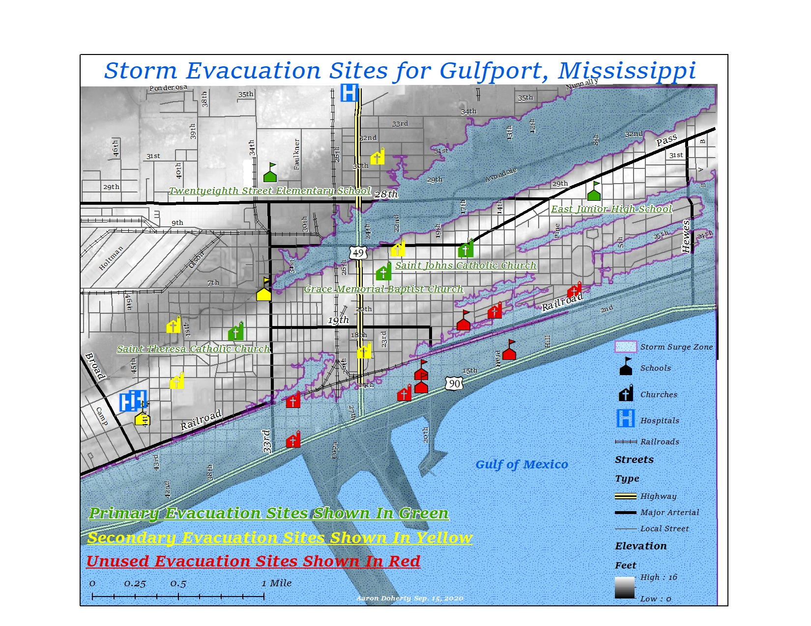
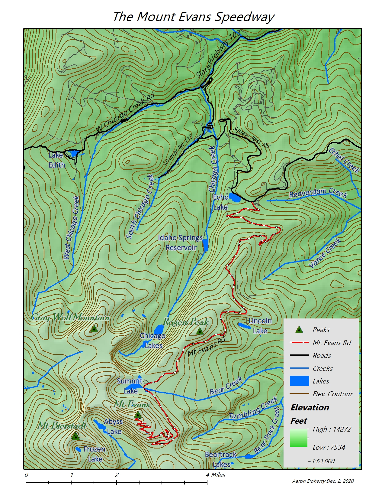
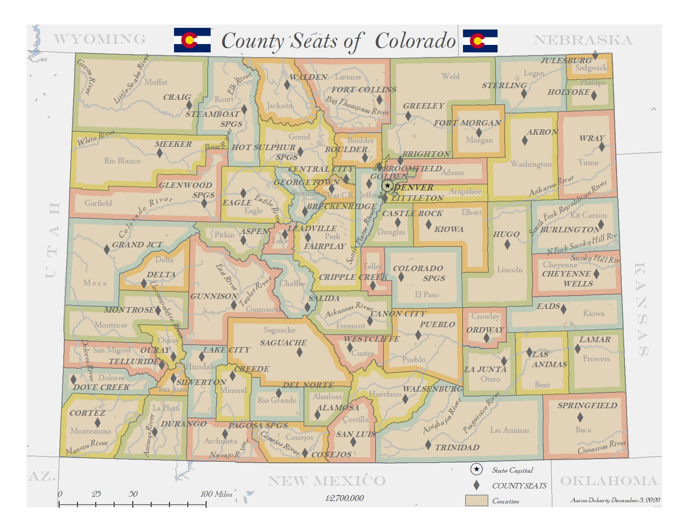
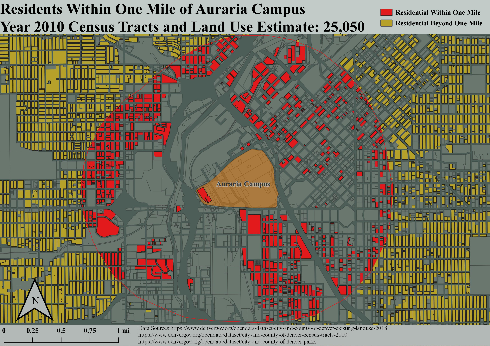
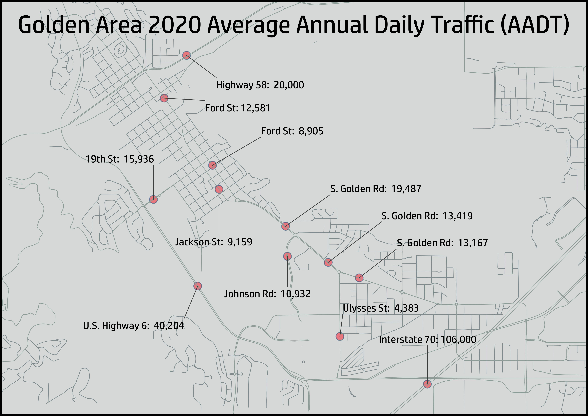
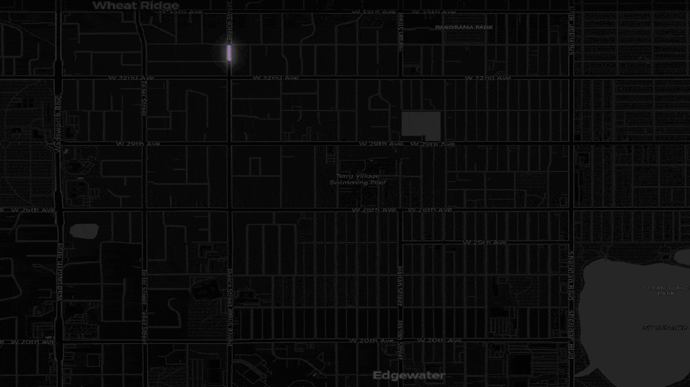

My name is Aaron Doherty, I'm a Geospatial Sciences major at MSU Denver. Here are some of my map projects:
Cartography Assignment ArcGIS Desktop:

Cartography Assignment ArcGIS Desktop:

Cartography Assignment ArcGIS Desktop:
Cartography Assignment ArcGIS Desktop:

Cartography Final ArcGIS Desktop:
Cartography Final ArcGIS Desktop:
Restaurant Delivery Network ArcGIS Desktop:

Remote Sensing Classification ArcGIS PRO:

Remote Sensing Change Detection Summit County, CO. ArcGIS PRO:

Earth Lab Summer 2021 Internship. Python/Jupyter Notebook:

GIS Applications Assignment QGIS:
Transportation Planning, Golden, CO Roundabout Traffic Study QGIS:
Transportation Planning, Golden, CO Roundabout Traffic Study QGIS:

Singapore Tourist Attractions Tutorial with Added Circuit #FormulaOne QGIS:

GPS Tracking Animation QGIS:
Stream Order Summit County, CO. Python 'Pysheds' Package Jupyter Notebook: